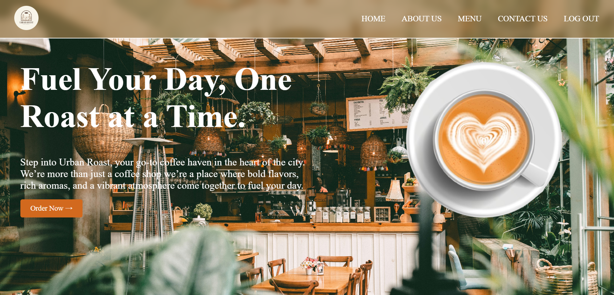
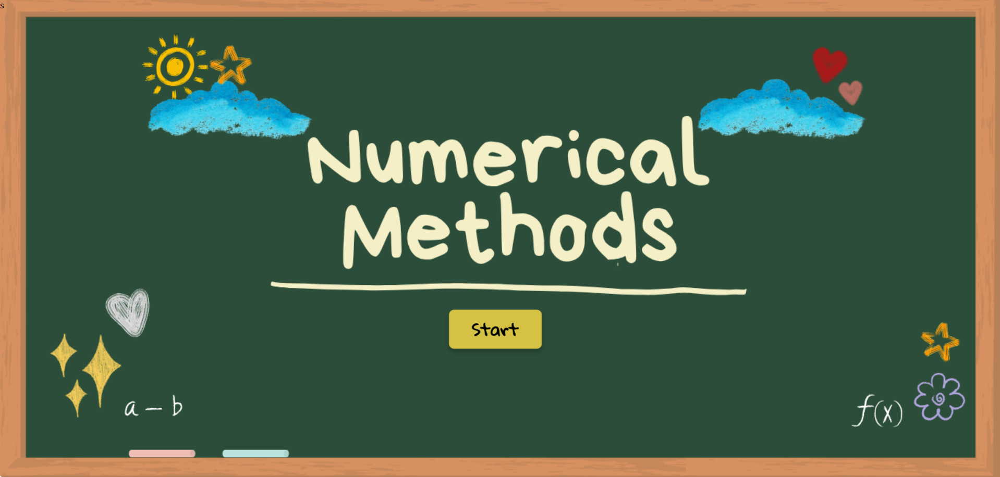
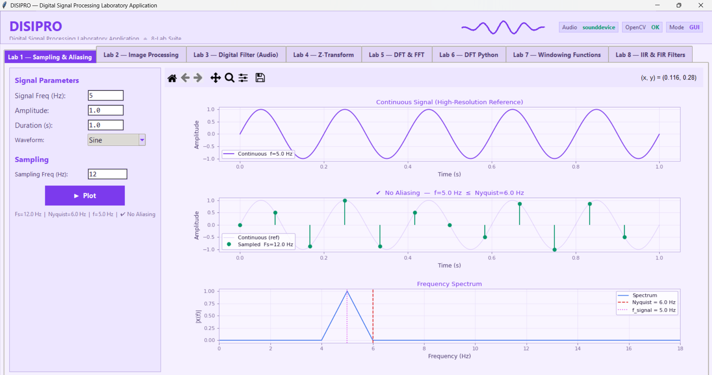

I am a Computer Engineering student passionate about web development, system design, and creative technology. I create web-based systems and digital design solutions using programming, database management, and modern development tools.

Urban Roast is a web-based cafe ordering system that allows users to create accounts, browse menus, place orders, and receive email confirmations with digital receipts.
HTML | CSS | JavaScript | Node.js | Firebase | EmailJS

Numerical Methods Calculator is a web-based application that solves mathematical problems using LU Decomposition, Cramer's Rule, Gauss Elimination, and Gauss-Jordan methods with an interactive interface.
HTML | CSS | JavaScript

DiSiPro is a desktop application (.exe) developed for digital signal processing operations. It performs 8 different DSP functions through a user-friendly interface for signal analysis and computation.
Python | Tkinter | PyInstaller
Designed and developed schematic layouts and miniature prototypes to represent system structures and project concepts. Created visual models to support planning, documentation, and presentation of design ideas. Applied technical design principles, measurement techniques, and problem-solving skills in developing accurate and functional prototypes.
Engineering Insite Hub
2026
View CertificateCisco Networking Academy
2026
View Certificate